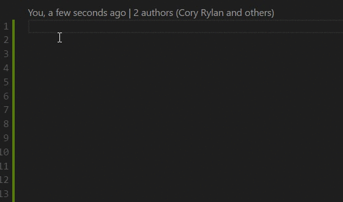

Blueprint CSS is a modern responsive CSS layout library & CSS grid built on top of Flexbox.
Blueprint CSS is lightweight weighing at only 2.5kb minified and gziped.
Errors
Blueprint will pick up common errors when using a CSS grid such as invalid column or row structures.
Editor Support
Blueprint CSS also has a VSCode snippets extension to make grids even easier. Download from the VSCode Extension Library.
Performance
Modern browsers have optimized and improved Flexbox and is now very fast at rendering. Check out this article Flexbox layout isn't slow by Paul Irish for more details.
Why Grids and Utility Helpers?
I thought Flexbox was to help get rid of CSS grids and keep our HTML semantic?
This library has been designed for large scale websites and web applications where thousands of lines of HTML and CSS exist as well as many developers and teams contributing of varying skill levels. Grid classes and utility classes scale very well in these environments. This grid is to help layout only. HTML & CSS should still be composed of well defined components. Please check out the following articles on this topic.
- About HTML Semantics and Front-End Architecture by Necolas Gallagher
- Contextual Styling: UI Components, Nesting, and Implementation Detail by Harry Roberts
- MindBEMding – getting your head ’round BEM syntax by Harry Roberts
- BEMIT: Taking the BEM Naming Convention a Step Further by Harry Roberts
For individuals weaned on an ideology where “semantic HTML” means using content-derived class names (and even then, only as a last resort), it usually requires you to work on a large application before you can become acutely aware of the impractical nature of that approach. You have to be prepared to discard old ideas, look at alternatives, and even revisit ways that you may have previously dismissed.
From About HTML Semantics and Front-End Architecture by Necolas Gallagher
Browser Support
Blueprint CSS has full support in all major browser vendors as well as ie10+.
Partial IE8 and IE9 support can be acheived by adding the polyfill JavaScript. The polyfill includes
and Flexibility to
add Flexbox support to IE8 and IE9 as well as Respond for media queries in IE8. Note certain flexbox alignments are not supported by the grid or the Flexibility but general
layout with the grid should work. For ie9 and ie8 support you must specify a column breakpoint ex: @sm, @md, @lg.
Warning if you have a significantly large user base on IE9 or below. Adding these polyfills will require your users to have good JavaScript support. Also this will slow down the rendering speed for these users. Take this into consideration when using these polyfills.